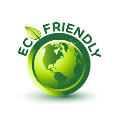
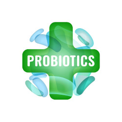

Produse Eco & Probiotice
Curățenie inteligentă pentru un mediu sănătos. Tehnologia probiotică asigură o igienizare de lungă durată, fiind alegerea ideală pentru copii, animale de companie și spații verzi.
Alte Servicii
Curățarea cu produse probiotice garantează un spațiu curat și igienizat, cu un echilibru microbiologic natural care protejează casa de bacterii patogene.


Află cum produsele probiotice pot transforma standardul de curățenie în spațiul tău. Suntem gata să îți oferim consultanță gratuită.